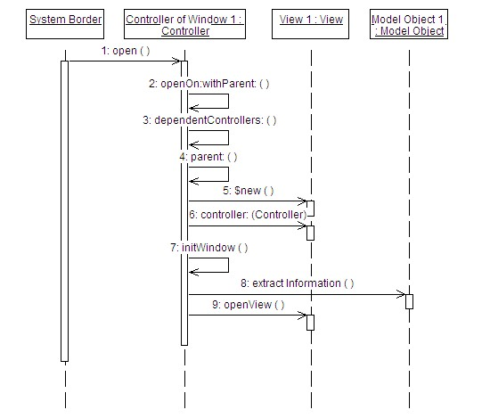

| Example: Architectural Template for MVC |
 |
|
| Related Elements |
|---|
Free format text describing the purpose of the MVC pattern The Model View Controller (MVC) design pattern is very well suited to applications that consist mainly of interactions via the Graphical User Interface (GUI) with model objects. The design pattern aims to organize the components of the application into one of the three following distinct layers, each corresponding to a limited and precisely specified area of responsibility:
The resulting architecture isolates the Model layer from the View layer so as to render the former independent of the
latter. The communication or binding between the two is enabled and controlled by the controller. This approach lends
itself naturally to a parallel development effort. The general principle of the allowed interactions in the system is
outlined in the figure below.
 Figure 4. An Interaction Between the MVC Base Classes |
| © Copyright IBM Corp. 1987, 2012 All Rights Reserved Property of IBM These materials are intended only for use as part of an IBM engagement |